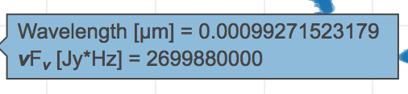
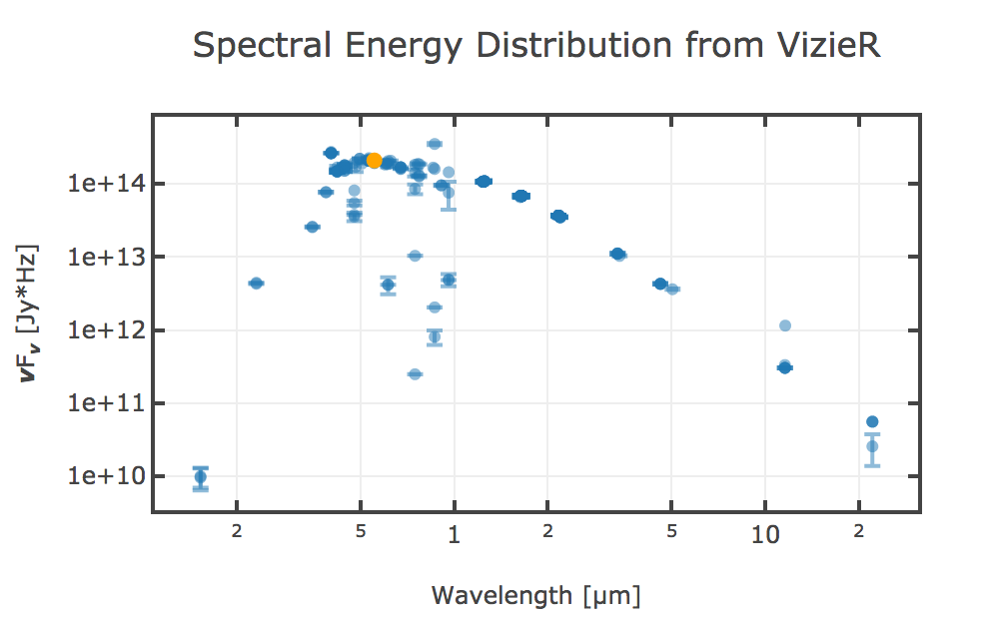

. To return to the prior view, click
the "Close" arrow in the upper left.
. To return to the prior view, click
the "Close" arrow in the upper left.
Contents of page/chapter:
+Default Plot
+Plot: A First Look
+Plot Linking
+What is it plotting?
+Changing What is Plotted
+Restricting What is Plotted
+Saving Plots
To obtain a full-screen view of your plot, click on the expand icon in
the upper right of the window pane when your mouse is in the window:
. To return to the prior view, click
the "Close" arrow in the upper left.
The plotting tool in the Data Discovery tool, by default, has the
spectral energy distribution (SED) for your search target, pulled
either from NED  (works
best for extragalactic objects) or VizieR
(works
best for extragalactic objects) or VizieR  .
.
Letting your mouse hover over a point tells you the values of the point under your cursor:. Clicking (in an unbinned plot) highlights that point, and it stays highlighted, though you must keep your mouse on the point in order to see the information about how many points it represents.

This is the SED that the
Data Discovery tool shows for HD 878, with the data being retrieved
from Vizier.
NED
If it uses NED to translate the name of the object to RA/Dec, then it will use NED data to get an SED. Very common names are resolved via NED but may not have an SED in NED. Try "M101" to get an SED; try "M16" to get the coordinates from NED but find no SED.
The units from the points are what are supplied by NED. (note that the carats are used in an on/off sense, e.g., erg s^-1^ cm^-2^ means ergs per second per centimeter squared, where the first carat means "superscript" and the second carat means "back to normal".) No additional translation has been done here, aside from multiplying to get nuF_nu.
The points that NED reports can come in a variety of units, but the data are filtered down to only include those in units of Jy before multiplying and plotting.
VizieR
If it uses SIMBAD to translate the name of the object to RA/Dec, then it will use VizieR to get an SED. Try the name of a star (like HD 878) to get an SED.
The VizieR photometry tool allows for easy visualization of photometry points extracted around a sky position from photometry-enabled catalogues in VizieR. Even when an object name is used as a target, what is returned is just a list of photometry point found within some search radius, and should not be mistaken for an actual SED for the target object: there is no guarantee that all photometry points correspond to the target, especially for extended sources or stars in a cluster in close (projected) proximity.
Note that, for VizieR searches, an additional circle appears on the image on the left; this is the search radius used to retrieve the points from VizieR that are shown here.
 . Configuration options then appear; the options are a
little different than other plots in tools like this:
. Configuration options then appear; the options are a
little different than other plots in tools like this:
You can see that it is doing manipulations to plot what is shown. The magnifying glass is a link that brings up a table that lists all of the available columns in the corresponding SED tab. Alternatively, you can just start typing, and viable options appear below the box. Whatever you put in the box must match the column name as shown in the catalog exactly.
Click on the triangle to open additional options for the layout.
You can change the label and units as shown in the plot.
You can enter simple mathematical relations in these boxes. Supported operators:
You can enter the label for the axes, and choose whether or not a grid is included on that axis, and whether or not the axis is reversed.
By default, the boundaries of the plot are set to encompass the full data range. Here you can change the boundaries to specific numbers. (This can also be set via filtering from the plot; see below.)
If you want a square or rectangular plot, you can change the x/y ratio as displayed.
Click "Apply" to apply, and "Close" to return to the plot without making changes.
In this plot, at the top of the plot options pop-up, you can control whether the points are shown as individual points, connected points, or just a line.
You can specify an error (either a column in the catalog, or calculated from a column in the catalog). Those errors can be symmetric or asymmetric (see pulldown menu).
You can also change either axis to be linearly or logarithmically scaled.
You can set axis limits on the plot itself from the plot options pop-up (discussed above).
However, and perhaps more powerfully, you can set limits from the plot
itself using a rubber band zoom. Click and drag in a sub-region of
the plot. A new icon appears in the upper right of the plot:  . This means "filter the catalog to leave
only those points encompassed by the selection in the plot." If you
click on the zoom icon, then the plot axes change to encompass just
the sources you have selected. If you click on the filter icon, then
the catalog view is filtered down, restricted to just those sources
you have selected, and the plot is zoomed in; the filter notes just
above the plot (and the above the table, as applicable) change to
remind you that you have a filter applied. Only those data points that
pass the filter are shown in the plot, in the table, and/or overlaid
on the image(s). (This is the behavior of 'filter', as opposed to
'select'; the former restricts what is shown, the latter just
highlights the points.) For more on filters, see the filtering dicussion in the tables
section.
. This means "filter the catalog to leave
only those points encompassed by the selection in the plot." If you
click on the zoom icon, then the plot axes change to encompass just
the sources you have selected. If you click on the filter icon, then
the catalog view is filtered down, restricted to just those sources
you have selected, and the plot is zoomed in; the filter notes just
above the plot (and the above the table, as applicable) change to
remind you that you have a filter applied. Only those data points that
pass the filter are shown in the plot, in the table, and/or overlaid
on the image(s). (This is the behavior of 'filter', as opposed to
'select'; the former restricts what is shown, the latter just
highlights the points.) For more on filters, see the filtering dicussion in the tables
section.
If you move your mouse over any of the points, you will get a pop-up telling you the values corresponding to the point under your cursor. If you click on any of the points, the object(s) corresponding to that point will be highlighted in SED table. This works the other way too - click on a row in the SED table, and the object will be highlighted in the plot.
You can also zoom with your mouse on the plot -- do whatever you would do with your mouse to scroll but with your mouse over the plot. You can also grab-and-drag the plot axes to change the plotting range.
 ). Your plot will
then be saved as a png file.
The saved PNG is the same size as it is on your screen. If you want a
big version, make the desired plot big on your screen (expand the view
to take up as much space as possible) before saving the PNG.
). Your plot will
then be saved as a png file.
The saved PNG is the same size as it is on your screen. If you want a
big version, make the desired plot big on your screen (expand the view
to take up as much space as possible) before saving the PNG.